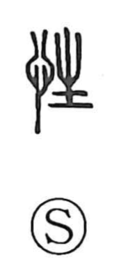

性

Uncategorized
Kun: saga | On: sei, sho
nature ・ character ・ sex
Explanation
A phono-semantic compound, 性 pairs the heart radical 忄, which points to feeling and sensibility, with 生 as its phonetic. The graph 生 originally depicts a sprouting plant and here lends the sound sei. From this formation, 性 came to mean the affective endowment human beings possess by birth—their innate nature or disposition. In the Warring States period it became a key term of moral thought: Mencius articulated the view that human nature is originally good, in line with Confucian teaching, while Xunzi spoke of nature as “bad” to stress the necessity of self-cultivation—an exhortation to improve oneself, not a denial that character can be corrected.